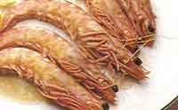

Menú A
LANGOSTINOS AL AJO

Preparación:
- En una cazuela de barro con aceite de oliva,rehogar la cebolla cortada muy fina. Cuando empiece a tomar color, poner unas cuantas ramitas de perejil picado.
- Antes de que se dore la cebolla, añadir los langostinos y rehogar hasta que cambien de color (toman un color rosado).
- Machacar los ajos en el mortero y desleir con un poco de vino blanco seco.
- Añadir a la cazuela, mezclar bien y salpimentar.
- Dar unos hervores fuertes, sacar y servir en la misma cazuela, bien caliente.